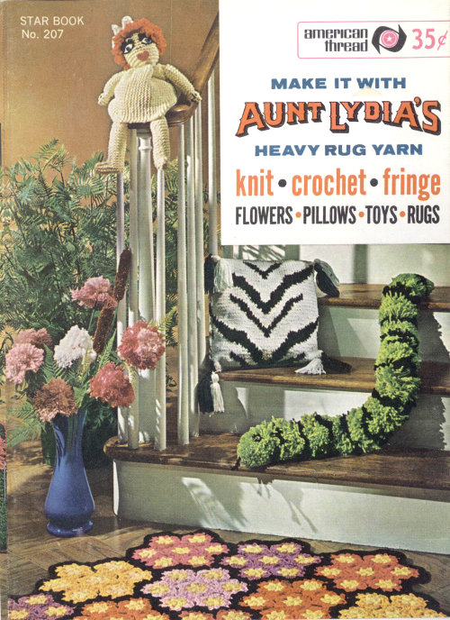
STAR BOOK NO. 207 35¢
american thread
HIGH RIDGE PARK, STAMFORD, CONN. 06905
PRINTED IN U.S.A.
With Moss and size H hook ch 45, s c in 2nd st from hook, * 1 d c in next st, 1 s c in next st, repeat from * across ch ending with 1 d c in last ch, ch 1 to turn all rows. 2nd ROW: S c in d c, d c in next s c, repeat from beg across row, ch 1, turn. Repeat 2nd row for pattern until section measures 15 inches from beg, cut yarn. Work a 2nd section in same manner.
LINING: Cut 2 sections allowing about ½ inch on all edges for seams. Seam 3 sides, fill with shredded foam rubber. Sew opening closed.
FINISHING: Weave 3 sides of pillow tog, insert lining in pillow and sew opening closed. With double strand of Cerise work a ch to fit all around pillow. Tack ch in place having wrong side of ch to right side.
FLOWERS: With Yellow “STAR” SIX STRAND EMBROIDERY COTTON and No. 7 hook ch 4, join to form a ring, work 8 s c in ring, do not join or turn this or following rounds. Place a marker at beg of each round. 2nd ROUND: 2 s c in each sc. 3rd ROUND: 1 s c in 1st sc, 2 s c in next sc, * 1 s c in next s c, 2 s c in next s c, repeat from * all around. NEXT 4 ROUNDS: Working in back loop of sts 1 s c in each s c, cut thread at end of last round leaving a length long enough to draw sts tog. Place over a 1 inch buttonmold, fasten securely. With Cerise and a darning needle, work into the 1st round of free loops, insert needle down in any loop (leave a 1 inch length at beg), * bring needle up in next loop, leaving a 2 inch length, insert needle down in next loop, repeat from * until all free loops are used, cut yarn leaving a 1 inch length. Work 2 more flowers in same manner. Work a 4th flower in same manner but have petal loops about 2½ inches long. Attach flowers in corner as illustrated.
With White cast on 52 sts. Work in stockinette st (K 1 row, P 1 row). Following chart on page 3 repeat twice then bind off.
FINISHING: Block to measurements. Fold lining material in half. Sew 2 side seams allowing ½ inch on each side for seam. Turn inside out and fill with shredded foam rubber or Cotton, sew top seam. Sew knitted section on front of pillow with “STAR” MERCERIZED SEWING THREAD.
TASSELS: (Make 4 of each color). Wind yarn 20 times over a 5 inch cardboard, tie one end, cut other end. Then tie again 1 inch from last tying. Attach one of each color in each corner. Trim tassels evenly.
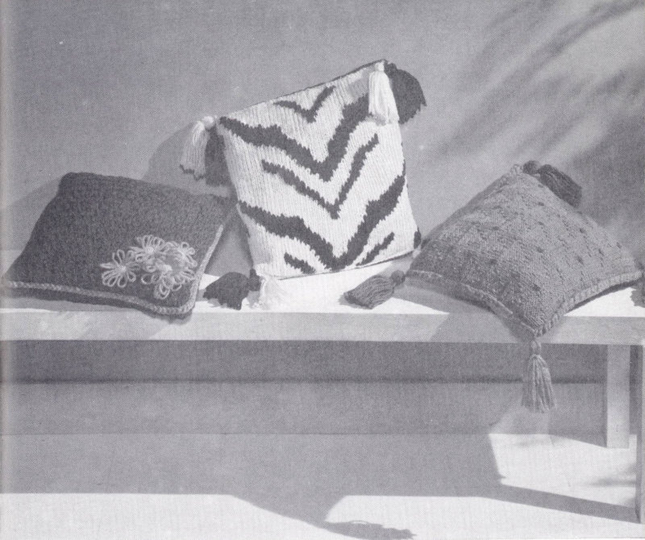
INSTRUCTIONS FOR KNITTED TASSEL PILLOW ON PAGE 24
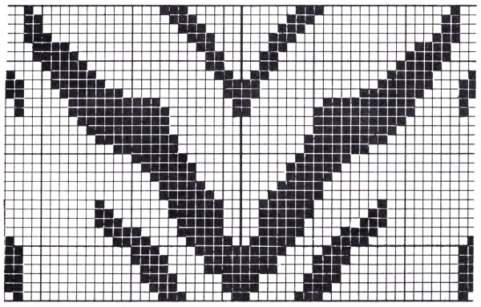
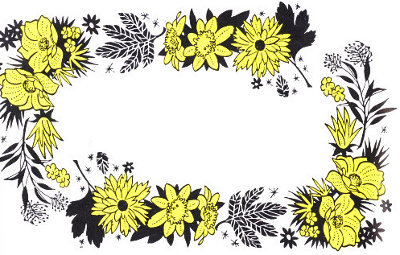
1. Open and cut 1 end of darker shade, cut skein into 5½ inch lengths.
2. Open and cut 1 end of lighter shade, cut skein into 3½ inch lengths.
3. Take 1 section of darker shade for bottom of flower. Place 2 sections of lighter shade in center of darker shade. Fold wire in half. Place in center of cut sections and twist wire together tightly.
4. Untwist each strand of yarn to fluff flower. (Shake and trim).
5. Glue 1 end of Fern Green underneath flower and twist and wrap around wire to form stem. Glue end.
1. Open and cut Brown skein in half.
2. Set aside 2 strands cut into 8 inch lengths.
3. Cut remainder of skein into 1½ inch sections. (Having about 8 to 10 sections for each cattail).
4. Take one 8 inch length, fold wire in half and wind length about 1 inch on each side of fold. Tie ends together 1 inch from top.
5. Take one section of 1½ inch strands, place between wires, twist wire tightly together. Repeat step 5 until cattail is length desired. (Approximately 5½ to 6 inches). Trim.
6. Cover wire for stem same as step 5 of Peony on this page.
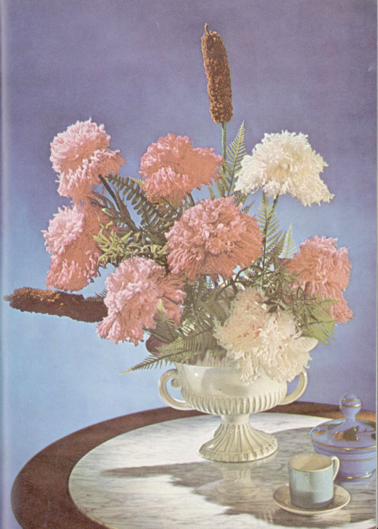
Directions are given for size 32. Changes for sizes 34 and 36 are given in parentheses.
BACK: With Bongo cast on 67 (71, 75) sts.
START PATTERN: 1st ROW: With Bongo P across row. 2nd ROW: P 1, * K 1, P 3, repeat from * across row ending last repeat with P 1. 3rd ROW: K 1, * P 1, K 3, repeat from * across row ending last repeat with K 1. 4th ROW: Repeat 2nd row, drop Bongo. 5th ROW: With Yellow P 1, * yarn to front, sl 1 as if to P, P 3, repeat from * across row ending last repeat with P 1. 6th ROW: K 3, * P 1, K 3, repeat from * across row. 7th ROW: P 3, * K 1, P 3, repeat from * across row. 8th ROW: Repeat 6th row, drop Yellow. Repeat from 1st to 8th row for pattern until back measures 14 inches from beg ending with 8th pattern row. NEXT ROW: SHAPE ARMHOLES: Keeping pattern even and working pattern in Bongo only for remainder of back, bind off 4 sts (all sizes) at beg of next 2 rows. Then dec 1 st at beg and end of every other row 4 times. Work even in pattern until armholes measure 7 (7½, 7½) inches ending on right side of work. NEXT ROW: NECK SHAPING: Work across 12 (14, 16) sts, place next 27 (27, 27) sts on st holder for neck, attach another skein of yarn, work across remaining 12 (14, 16) sts. NEXT 2 ROWS: SHAPE SHOULDERS: Working both sides at same time bind off 5 (6, 7) sts at armhole edge and dec 1 st on each side of neck edge in each row. NEXT 2 ROWS: Bind off 5 (6, 7) sts at armhole edge in each row.
FRONT: Work same as back until armholes measure 5½ (6, 6) inches ending on right side of work. NEXT ROW: SHAPE NECK: Work across 16 (18, 20) sts, place next 19 (19, 19) sts on st holder, attach another skein of yarn, work across remaining sts. NEXT 6 ROWS: Working both sides at same time work in pattern dec 1 st on each side of neck edge in each row (all sizes). Work even until armholes measure same as back. Shape shoulders same as back.
FINISHING: Block each section slightly. Weave shoulder and side seams.
NECK BAND: With Bongo and dpn pick up and K 74 (78, 78) sts including sts from st holder. P each row for 5 rows, bind off. Fold under in a roll and tack in position to wrong side.
ARMHOLE BANDS: With Bongo and dpn pick up and K 54 (58, 58) sts around armhole. P 3 rows, bind off. Finish same as neck band.
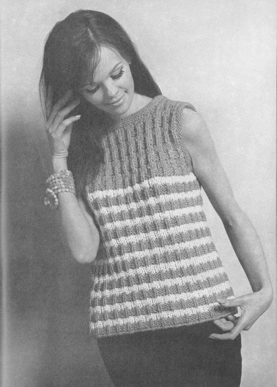
MOTIF: With Buttercup ch 4, join to form a ring, ch 3, holding last loop of each d c on hook, 2 d c in ring, y o and pull through all loops, * ch 3, cluster st in ring (cluster st: holding last loop of each d c on hook, 3 d c in ring, y o and pull through all loops), repeat from * 4 times, ch 3, join, cut yarn. 2nd ROUND: Attach Cerise in any ch 3 loop, s c, 4 d c, s c in same loop (scallop), * s c, 4 d c, s c in next loop, repeat from * all around, join, cut yarn. Work a 2nd motif in same manner joining to 1st motif in last round as follows: attach Cerise in any ch 3 loop, s c, 2 d c in same loop, drop loop from hook, insert hook in center of scallop of 1st motif, pick up loop, pull through space, 2 d c, s c in same space of 2nd motif, s c, 2 d c in next loop, join in center of next scallop of 1st motif in same manner, 2 d c, s c in same space of 2nd motif, complete round same as 1st motif, join, cut yarn. Join 3rd motif to 2nd and 1st motifs in same manner having 2nd joining of 3rd motif in same space of 1st and 2nd motif joining, complete 3rd motif. Join 3 more motifs same as last motif. Join 7th motif to previous and 1st motifs in same manner. See small chart for joining on page 12.
EDGE: Attach Black in any joining of 2 motifs, s c, ch 1, s c in same space, ** ch 2, s c in space between next 2 s c, * ch 2, s c, ch 1, s c in center of next scallop, ch 2, s c in space between next 2 s c, repeat from * once, ch 2, s c, ch 1, s c in next joining, repeat from ** all around, join, cut yarn.
Work 3 more place mats working 2nd round in Bongo, Watermelon and Orange.
Work one motif in same colors as place mat, working Black edge all around each motif.
Work 19 groups same as place mats having 3 of Old Rose, 4 of Orange, 3 of Cerise, 3 of Bongo, 3 of Pink, and 3 of Watermelon. Arrange motifs according to chart on page 12. Sew groups tog in back loop of sts.
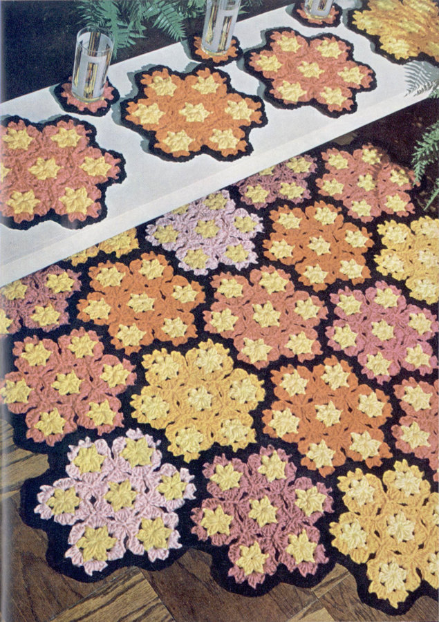
With White work 1st 8 rounds same as Rose tissue topper on page 24. NEXT 14 ROUNDS: Working in both loops work 1 s c in each s c, cut yarn at end of last round.
RUFFLE: With right side of work toward you, working in front loop of sts only, attach Bongo in any s c, * ch 4, sl st in next s c, repeat from * all around, join, cut yarn. NEXT ROUND: Attach National Blue in free loop of same s c row, work 2 s c in each st, do not join. NEXT ROUND: Working through both loops of sts, work 1 s c in each s c, join, cut yarn.
HAT: With Bongo ch 30, join in 1st st of ch being careful not to twist ch. 1st ROUND: 1 s c in each st, do not join this or following rounds. Place a marker at beg of each round. 2nd ROUND: Dec in next 2 sts (to dec: keeping loops on hook pull up a loop in next 2 sts, y o and work off all loops at one time), 1 s c in each of next 3 s c, repeat from beg all around. 3rd ROUND: 1 s c in each st. 4th ROUND: Dec 6 sts evenly spaced, do not work dec directly over previous dec. Repeat 3rd and 4th rounds until 6 sts remain. NEXT ROUND: Work 1 s c in each st, join, cut yarn leaving a length. Thread yarn into blunt needle, draw sts tog at top, fasten securely.
RUFFLE: Work same as ruffle for topper but work ch 3 loops.
POMPON: Wind National Blue 80 times over a 1 inch cardboard. Tie one end, cut other end. Trim into shape. Attach to top of hat.
FINISHING: Sew hat to top of tissue topper. Cut eyes, nose, mouth and lines as illustrated with felt. Glue in position.
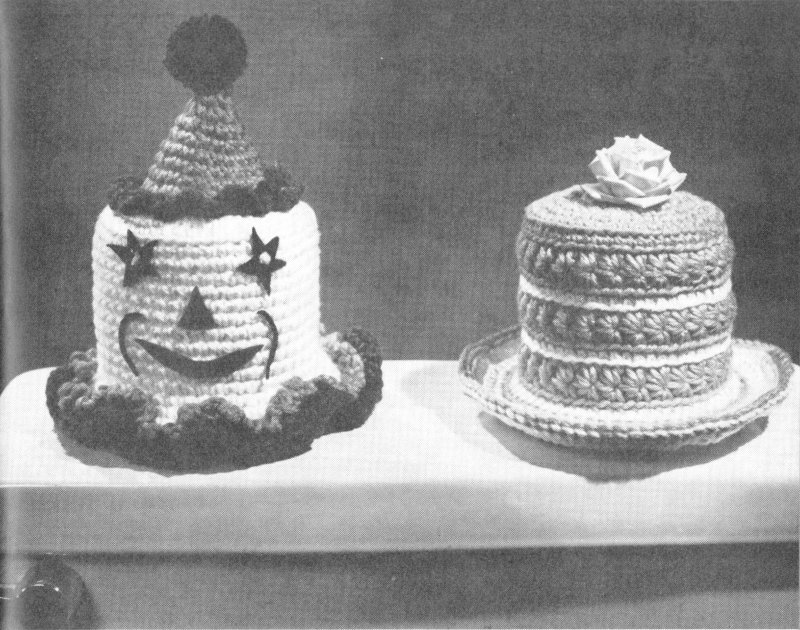
INSTRUCTIONS FOR ROSE TOPPER ON PAGE 24
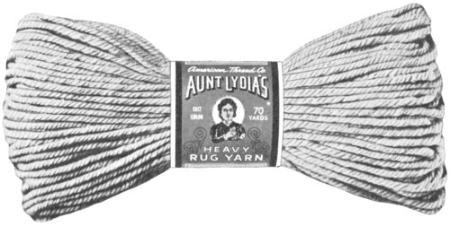
American Thread Co.
Aunt Lydia’s
FAST COLOR • 70 YARDS
HEAVY RUG YARN
BACK: Cast on 63 sts. 1st ROW: P across. 2nd ROW: K 2, * y o, K 2 tog through back, P 1, K 3, P 1, K 2 tog from front, y o, P 1, repeat from * 4 times, y o, K 2 tog through back, P 1, K 3, P 1, K 2 tog from front, y o, K 2. 3rd ROW: P 4, * K 1, P 3, K 1, P 5, repeat from * 4 times ending K 1, P 3, K 1, P 4. 4th ROW: Repeat 2nd row. 5th ROW: Repeat 3rd row. 6th ROW: Repeat 2nd row. 7th ROW: Repeat 3rd row. 8th ROW: K 2, * y o, K 2 tog through back, P 1, K 1, let next st drop 5 rows, pick up and K dropped st working over all dropped rows, K 1, P 1, K 2 tog from front, y o, P 1, repeat from * 4 times, y o, K 2 tog through back, P 1, K 1, let next st drop 5 rows, pick up and K dropped st working over all dropped rows, K 1, P 1, K 2 tog from front, y o, K 2. Repeat from 1st to 8th row for pattern until there are 13 patterns. Place markers for underarms, then work 4 more patterns. Bind off.
FRONT: Work same as back until there are 15 patterns.
NEXT ROW: SHAPE NECKLINE: Work across 19 sts in pattern, bind off 25 sts for neck, work across remaining sts. NEXT ROW: Work across 19 sts, attach another skein of yarn, work across remaining sts. Working both sides at same time continue in established pattern for 2 complete patterns. Bind off.
FINISHING: Steam each section slightly. Sew side and shoulder seams.
NECK AND ARMHOLE EDGES: With crochet hook, right side facing, attach yarn at left shoulder, working into every other row on side of neck, and every other st on front and back of neck, sl 1, ch 1 all around, join, cut yarn. Work in same manner around armholes.
LOWER EDGE: Attach yarn at side seam, with crochet hook, working into each st sl 1, ch 1 all around, join, cut yarn.
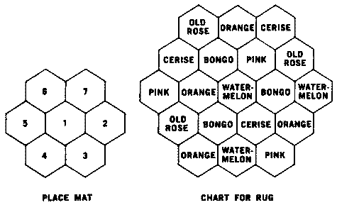
CHART FOR RUG ILLUSTRATED ON PAGE 9
| 6 | 7 | ||||
| 5 | 1 | 2 | |||
| 4 | 3 | ||||
| PLACE MAT | |||||
|---|---|---|---|---|---|
| OLD ROSE | ORANGE | CERISE | |||||||
| CERISE | BONGO | PINK | OLD ROSE | ||||||
| PINK | ORANGE | WATERMELON | BONGO | WATERMELON | |||||
| OLD ROSE | BONGO | CERISE | ORANGE | ||||||
| ORANGE | WATERMELON | PINK | |||||||
| CHART FOR RUG | |||||||||
|---|---|---|---|---|---|---|---|---|---|
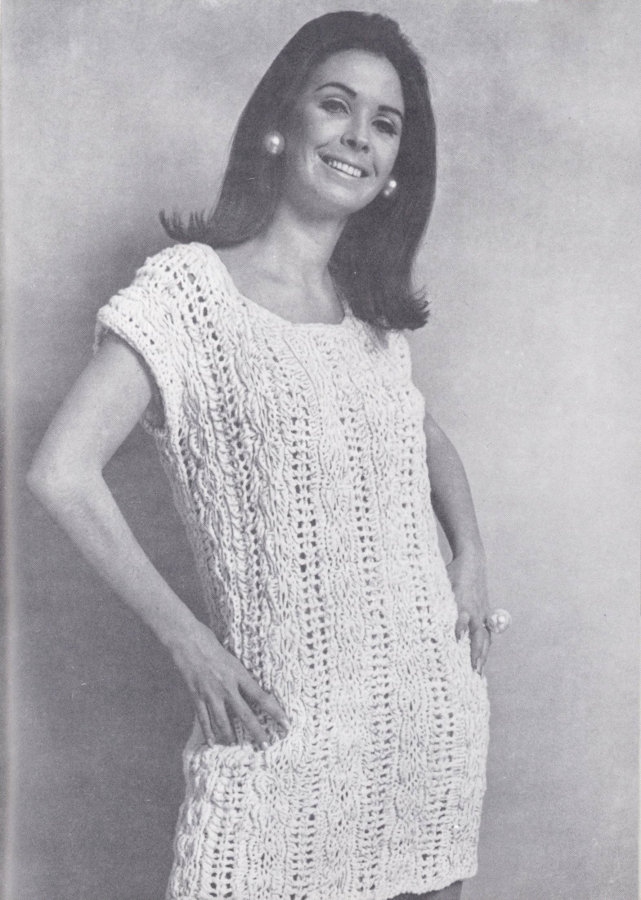
With Antique ch 71, s c in 2nd st from hook, ch 1, keeping loops on hook, pull up a loop in same st of ch, and in each of next 2 sts of ch, y o and work off 2 loops, y o and work off remaining 3 loops, * ch 1, keeping loops on hook, pull up a loop in last st worked in and next 2 sts of ch, y o and work off 2 loops, y o and work off remaining 3 loops, repeat from * 32 times, ch 1, s c in last st, ch 1 to turn all rows. 2nd ROW: S c in s c, * ch 1, keeping loops on hook, pull up a loop in last st worked in and in each of next 2 sts, y o and work off 2 loops, y o and work off remaining 3 loops (pattern), repeat from * 33 times, ch 1, skip 1 st, s c in last st. Repeat 2nd row 29 times.
START BORDER: Working around entire rug work 3 s c in each corner st, 68 s c across each long side and 47 s c across each short side. Do not join or turn this or following rounds. Place a marker at beg of each round. NEXT ROUND: Working in s c work 1 s c in each st and 2 s c on each side of each corner st and 3 s c in each corner st. NEXT 6 ROUNDS: Work 1 s c in each s c and 3 s c in each corner st of each round. NEXT ROUND: Working in back loop of sts sl st in each st, cut yarn.
FLOWERS: Work 3 of each color. 1st ROUND: Ch 4, join to form a ring, * ch 2, 3 d c, ch 2, s c in ring, repeat from * 3 times. 2nd ROUND: Ch 5, sl st in next s c, repeat from beg all around. 3rd ROUND: S c in next ch 5 loop, ch 2, 5 d c in same loop, ch 2, s c in same loop, repeat from beg all around, join, cut yarn.
FINISHING: Block rug. Arrange flowers as illustrated and sew to rug.
With Antique ch 21, 1 s c in 2nd st from hook and in each remaining st of ch, turn. 2nd ROW: Ch 3 (counts as 1 d c), 2 s c in 1st st, work 9 patterns, ch 1, 2 s c, 1 d c in last st, turn. Repeat 2nd row always having 2 more patterns in each row until there are 23 patterns in row, ch 1 to turn last row. NEXT 13 ROWS: Repeat 2nd row of rug. NEXT ROW (Dec Row): Skip 1st 2 sts, s c in next st, work 21 patterns, ch 1, skip 1 st, keeping loops on hook, pull up a loop in next st, skip 1 st, pull up loop in next st, y o and work off all loops at one time (s c dec), ch 1, turn. NEXT 2 ROWS: Work even in pattern. Repeat last 3 rows once (19 patterns). NEXT 5 ROWS: Repeat dec rows having 2 patterns less in each row (9 patterns in last row), cut yarn.
BORDER: Attach yarn on side of 1st row at beg, working in s c work 47 s c on side of cover, 20 s c across straight edge and 47 s c on opposite side of cover ending at other end of starting ch, ch 1, turn. 2nd ROW: Work in s c throughout dec 1 st at beg and end of row. 3rd ROW: Dec 1 st at beg and end of row and dec 10 more sts evenly spaced. 4th ROW: Repeat 2nd row. 5th ROW: 1 s c in each s c. 6th ROW: (BEADING): S c in 1st s c, ch 1, skip next s c, s c in next s c, * ch 2, skip 2 s c, s c in next s c, repeat from * across row ending to correspond, cut yarn.
TIE: Crochet a ch 48 inches long. Lace through beading.
FINISHING: Arrange flowers and sew to top of cover as illustrated.
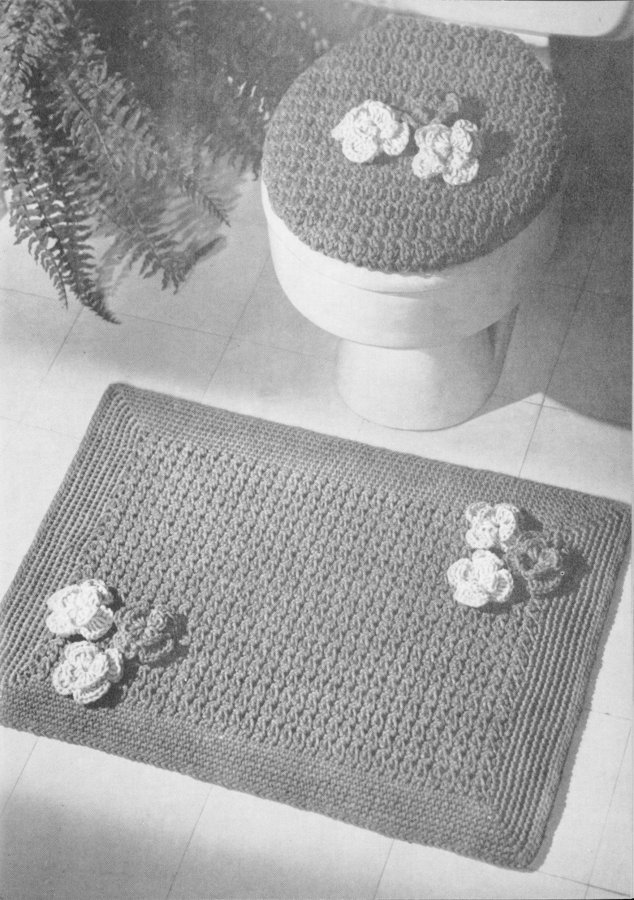
With White cast on 37 sts. * 1st ROW: K across row. 2nd ROW: P across row. 3rd ROW: K across row, drop White. 4th ROW: Attach Yellow and K across 30 sts, turn. (NOTE: The hole formed in turning will be used as beading.) 5th ROW: P across, cut Yellow. 6th ROW: Pick up White and K across 37 sts. Repeat from 1st to 6th row 3 times, working next color stripe Peacock, next color stripe Cerise, and next color stripe Moss *. Repeat between *’s 5 times, Bind off. Sew ends tog.
BOTTOM: With White cast on 9 sts and work in garter st inc 1 st in last st of each row 16 times. Work even for 16 rows. Dec. 1 st at end of each row 16 times, bind off. Sew in position.
TIE: Cut each color 50 inches long. Tie 1 inch from end and twist, tie 1 inch from other end. Lace through beading.
With White cast on 25 sts. Work in pattern same as topper below having 11 color stripes, bind off. Sew two ends tog.
BOTTOM: With White cast on 4 sts. NEXT 6 ROWS: Work in garter st (K each row), inc 1 st in last st of each row. NEXT 6 ROWS: Work even. NEXT 6 ROWS: Dec 1 st at end of each row. Bind off. Sew long edges tog. Sew bottom in position.
TOP: With White cast on 44 sts, work in garter st for 13 rows. NEXT ROW: K 2 tog across row. NEXT ROW: K across row. NEXT ROW: K 1, * K 2 tog, K 1, repeat from * across row. Repeat last 2 rows once. Bind off leaving a length for sewing. Thread length into blunt needle and draw sts tog, fasten securely. Sew side seam.
POMPON: Wind all colors 30 times over 2½ inch cardboard, tie one end, cut other end. Trim into shape. Attach to top.
With White cast on 15 sts. * 1st ROW: K across row. 2nd ROW: P across row. 3rd ROW: K across row, drop White. 4th ROW: Attach Yellow, K across row. 5th ROW: P across row, cut Yellow. 6th ROW: 17 Pick up White, K across row. Repeat from 1st to 6th row 3 times working next color stripe Peacock, next color stripe Cerise and next color stripe Moss. * Repeat between *’s 3 times, bind off.
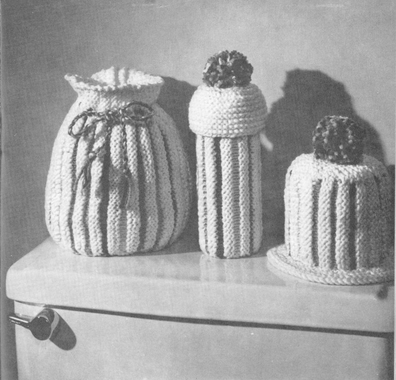
BRIM: With White pick up 72 sts along 1 long edge and work in garter st (K each row) for 5 rows, bind off. Sew side edges tog.
TOP: With White cast on 7 sts, work in garter st inc 1 st in last st of each row until there are 17 sts on needle. Work 8 rows even. Then dec 1 st at end of each row until there are 7 sts, bind off. Sew top in position.
POMPON: Wind all colors 45 times over 2 inch cardboard. Tie one end, cut other end and trim into shape. Attach to top of topper.
BODY: Open 3 skeins of Natural. Place skeins on top of each other. Tie in center, fold in half, tie 4½ inches below for head. Stuff body and head sections with cotton and tie bottom of body section.
ARMS: Open and cut 1 skein of Cork at one end, then cut into 3 inch lengths. Take 2 wires, fold in half, * take half of one 3 inch group, place in center of wire at fold, twist wire, then take other half of same group, place between wires and twist, repeat from * until arm is 13 inches long. Twist end of wire and attach in place. Work other arm in same manner.
LEGS: Cut 2 skeins of Cork into 4 inch lengths. Take 4 wires, twist tog at one end, place half of one 4 inch length group at joining of wire, and complete same as arms until leg is 22 inches long. Twist end of wire and attach in place. Work other leg in same manner.
See diagrams on page 34.
HANDS: Cut Pink felt according to diagram. Sew 2 sections tog, fill with cotton, glue Red felt in place for fingernails.
SHOES: Cut Black felt from diagram, overcast tog, fill with cotton.
EYES, MOUTH, NOSE AND LASHES: Cut sections as illustrated and glue in position.
ASSEMBLING: Attach hands to arms, and shoes to legs.
HAIR: With Orange work hair in same manner as Pajama or Toaster Cover on page 31.
With Cerise ch 72, join taking care not to twist ch, * ch 4, skip 2 sts of ch, sl st in next ch, repeat from * all around ending ch 2, s d c in joining; this brings yarn in position for next round (s d c: y o, insert in st, pull through, y o and pull through all loops at one time). 2nd ROUND: Turn, sl st in loop, * ch 4, sl st in next loop, repeat from * all around ending ch 2, s d c in 1st sl st. Repeat 2nd round 19 times. 22nd ROW: Divide for front and back in this row. Work across 9 loops for FRONT, ch 2, s d c in next loop, ch 4, turn. NEXT ROW: Work across 9 loops, ch 2, s d c in next loop, ch 4, turn. Repeat last row (having 1 less loop in each row) until 4 loops remain, cut yarn.
BACK: Skip 1 loop for underarm, attach yarn and work across 9 loops, ch 2, s d c in next loop. Complete same as front until 4 loops remain, do not cut yarn.
FINISHING: Work 1 s c over each loop around armhole, work 3 s c over each loop at neck, work 1 s c over each loop of other armhole, work 3 s c over remaining loops of neck, join, cut yarn. Place mini over doll, tack sts tog at shoulders.
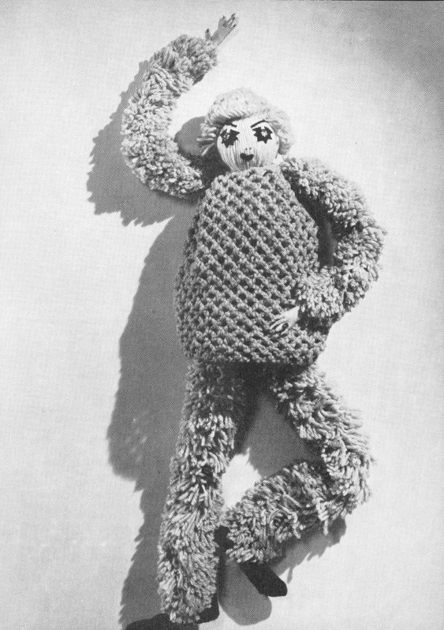
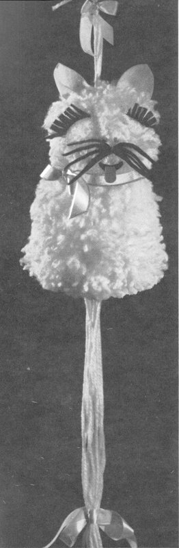
Open skein, cut 1 end. Set aside 2 lengths for tying and 5 lengths for tail.
BODY: Cut remainder of skein into 7 equal sections. Place each section over the other. Take 1 tying strand, fold in half and tie firmly in center, turn pompon and tie again. Shake pompon. Open 2nd skein, cut 1 end, then cut into 7 equal parts, and complete same as 1st pompon. Tie 2 pompons tog.
HEAD: Open 3rd skein, cut 1 end. Set aside 2 lengths for tying. Cut remainder of skein into 5 inch sections. Place each section over the other and complete same as large pompon leaving tying ends for leash. Tie head and body pompons tog. Cut and trim into shape. Brush slightly for fuzzy effect.
FACE: Using diagrams on page 35 cut eyes, whiskers and mouth from black felt. Slash mouth, eyelashes and whiskers along indicated lines. Cut tongue and nose from red felt. Cut ears from pink felt. Pleat ears along straight edge. Glue features in place. Tie ribbon around neck. Fold tail lengths in half and tie in place. Finish with ribbon bow. Tie leash ends in bow.
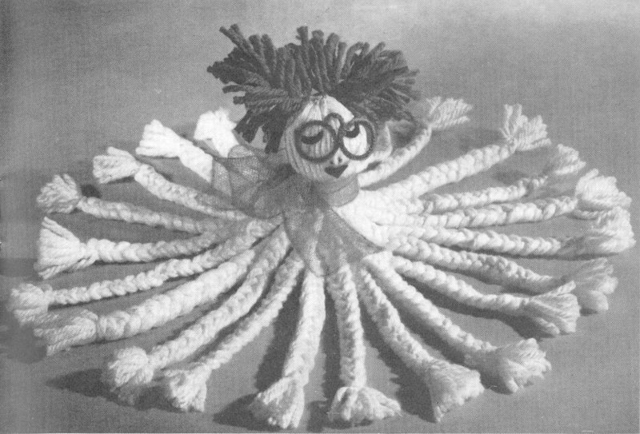
Open 1 skein of White. Tie at center. Cut each end. Fold over styrofoam ball, and tie below ball. * Take 12 strands, divide in thirds and braid. Repeat from * until all strands are braided. Cut away any extra strands and trim ends. Open and cut each end of 2nd skein. White tie in center. Repeat from 1st * until all strands are used, trim ends. Place under braided section below the head and attach.
FACE: Cut features as illustrated and glue in position. Form glasses with 1 pipe cleaner and sew in place. Tie nylon net around neck. Cut 32 strands of Red 3 inches long. Fold one pipe cleaner in half. Place 4 strands between pipe cleaner at fold, twist pipe cleaner tightly once, * take 4 more strands, place between pipe cleaner, and twist pipe cleaner tightly once again, repeat from * until all strands are used. Work 2nd pipe cleaner in same manner. Attach to top of head as illustrated.
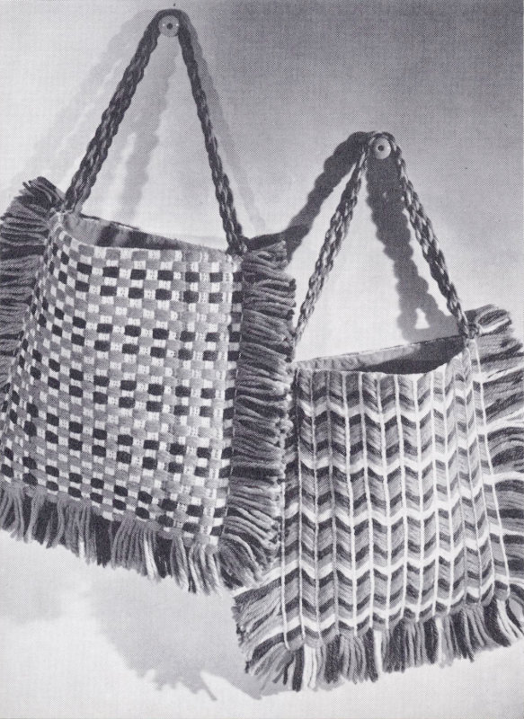
WEAVING DETAIL ON PAGE 27
Cut strands of yarn about 22 inches long. Start weaving at lower edge of short side of dish cloth. Thread Cerise into blunt needle allowing a 2 inch length at each end for fringe. 1st ROW: Insert needle down 1st mesh and up next mesh of 1st row, * skip next 4 meshes, insert needle down next mesh, skip next 4 meshes, insert needle up next mesh, repeat from * across row ending with skip next 4 meshes, insert needle down next mesh and up next mesh. 2nd and 3rd ROWS: Repeat 1st row working in next 2 rows of meshes. 4th, 5th and 6th ROWS: With Chartreuse insert needle down 2nd mesh, * skip next 4 meshes, insert needle up next mesh, skip next 4 meshes, insert needle down next mesh, repeat from * across row ending with skip next 4 meshes, insert needle up next mesh. Repeat last 6 rows for pattern working in colors as follows: Lilac, Chartreuse, National Blue, and Chartreuse. Repeat from beg for color scheme until bag is completed. Cut 3 inch strands of yarn for lower edge fringe. Following color scheme tack 3 strands of each color in each stripe across (tack on wrong side bringing fringe to right side). Work another section in same manner. Trim fringe evenly.
LINING and HANDLES: Work same as Ripple Tote Bag.
Cut strands of yarn about 24 inches long. Always weave under two bars of dish cloth throughout. Thread Bongo into blunt needle and start weaving at lower edge of short side of dish cloth. 1st ROW: Allow a 2 inch length at each end for fringe, insert needle down 1st mesh of 1st row, weave under next two bars, * skip next 4 meshes, weave under next two bars of 5th row above, skip next 4 meshes, weave under next 2 bars of starting row, repeat from * across row. Start all succeeding rows one row above each previous row, and work all rows in same manner throughout working 2 more rows in Bongo, 3 rows in Lilac, 3 rows in Yellow, 3 rows in Bongo, 3 rows in Lilac, 3 rows in Chartreuse. Repeat color scheme from beg until bag is completed. Cut 3 inch strands of yarn for lower edge fringe. Following color scheme tack 3 strands of each color in position across (tack on wrong side bringing fringe to right side). Work another section in same manner. Trim fringe evenly.
LINING: Cut 2 sections of buckram ½ inch less than bag. Sew buckram to wrong side of bag. Weave 3 sides of bag tog with “AUNT LYDIA’S” Button and Carpet Thread leaving one short side open. Cut lining allowing for seams. Fold lining in half, sew side seams. Insert in bag, fold hem under at top of bag, tack lining in position.
Continuation from page 25
HANDLES: Cut 2 yd. lengths of each color, twist tightly, fold in half and let twist itself. Knot at each end leaving 2 inches free for fringe. Sew in position.
illustrated on page 3
With Antique cast on 59 sts. 1st ROW: * P 9, K 1, repeat from * across row ending with P 9. 2nd ROW: * K 9, P 1, repeat from * across row ending with K 9. 3rd ROW: K 1, * P 7, K 3, repeat from * across row ending with P 7, K 1. 4th ROW: P 1, * K 7, P 3, repeat from * across row ending with K 7, P 1. 5th ROW: K 2, * P 5, K 5, repeat from * across row ending with P 5, K 2. 6th ROW: P 2, * K 5, P 5, repeat from * across row ending with K 5, P 2. 7th ROW: K 3, * P 3, K 7, repeat from * across row ending with P 3, K 3. 8th ROW: P 3, * K 3, P 7, repeat from * across row ending with K 3, P 3. 9th ROW: K 4, * P 1, K 9, repeat from * across row ending with P 1, K 4. 10th ROW: P 4,* K 1, P 9, repeat from * across row ending with K 1, P 4. Repeat from 1st to 10th row 6 times, bind off.
EMBROIDERY: With Cerise and Lilac alternating colors embroider in duplicate st on every 10th st of 9th and 10th rows of pattern as illustrated. See page 33 for duplicate st.
FINISHING: Steam and block. Attach to pillow.
BRAID: Cut three yard lengths of Antique. Using 3 strands crochet a ch. Sew right side of ch to edge of pillow.
TASSELS: Make 2 each of Cerise and Lilac. Wind yarn 25 times over a 5 inch cardboard, tie one end. Slip off cardboard, tie about 1 inch below first tying. Cut other end and trim. Attach one tassel to each corner.
illustrated on page 11
With Cerise ch 2, 8 s c in 1st st of ch, do not join or turn this or following rounds. Place a marker at beg of each round. 2nd ROUND: 2 s c in each s c. 3rd ROUND: S c in next s c, 2 s c in next s c, repeat from beg all around (24 s c). NEXT 4 ROUNDS: Inc 8 sts evenly spaced in each round, do not place inc directly over inc of previous round and end last round with a sl st (56 sts in last round). 8th ROUND: Working in back loop of sts only 1 s c in each st, join in 1st s c. 9th ROUND: Ch 3, work in star st as follows: keeping all loops on hook pull up a loop in 2nd and 3rd st from hook, in joining, and in back loop of each of next 2 s c (6 loops), y o and pull through all loops at one time, ch 1 (this ch 1 is termed the eye of star st), * keeping all loops on hook pull up a loop in eye of star st just made, in side of same star st, in base of same star st, and in back loop of each of next 2 s c (6 loops), y o and pull through all loops at one time, ch 1, repeat from * all around (28 star sts), join in 1st star st. 10th ROUND: S c in same space, * s c in eye of star st, s c in back loop of one side of next star st, repeat from * all around ending to correspond (56 s c), drop Cerise (when changing colors always complete last half of st with new color), with White join in st s c. 11th ROUND: Working in back loop of sts only 1 s c in each st, drop White, with Cerise join in 1st s c. Repeat 9th, 10th and 11th rounds twice. NEXT ROUND: With Cerise repeat 11th round, join, cut yarn.
RUFFLE: With White working through both loops of sts work 1 s c in joining, * 2 s c in next s c, s c in next s c, repeat from * all around ending to correspond, do not join this or following rounds. NEXT 2 ROUNDS: 1 s c in each s c, join last round, cut yarn. NEXT ROUND: With Cerise working in back loop of sts only work a sl st in each st, cut yarn.
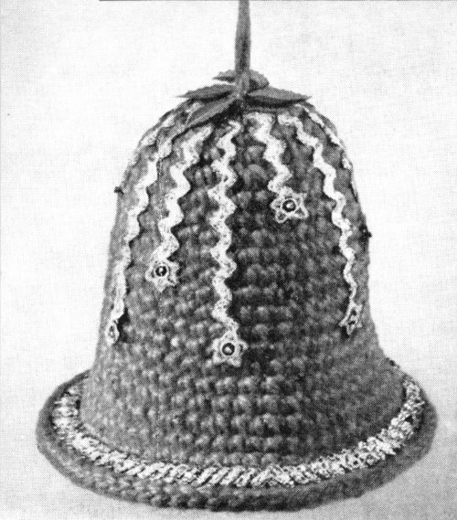
With Red ch 2, 8 s c in 1st st of ch, do not join or turn this or following rounds. Place a marker at beg of each round. 2nd ROUND: 2 s c in each s c. 3rd ROUND: 2 s c in next s c, 1 s c in next s c, repeat from beg all around (24 s c). 4th ROUND: 1 s c in each s c. 5th ROUND: 1 s c in each of next 2 s c, 2 s c in next s c, repeat from beg all around (32 s c). NEXT 3 ROUNDS: 1 s c in each s c. 9th ROUND: 2 s c in next s c, 1 s c in each of next 3 s c, repeat from beg all around (40 s c). NEXT 8 ROUNDS: 1 s c in each s c. NEXT ROUND: S c in next s c, 2 s c in next s c, repeat from beg all around (60 s c). NEXT 2 ROUNDS: 1 s c in each s c. NEXT ROUND: 1 s c in each of next 4 s c, 2 s c in next s c, repeat from beg all around. NEXT ROUND: 1 s c in each s c to within last 3 s c, sl st in each of next 3 s c to even round. NEXT ROUND: Sl st in each st, cut yarn.
TRIM: Cut 2 strips of rick rack each 20 inches long. Twist tog to form solid band. Sew or glue to bell as illustrated. Cut 3 strips of rick rack 4½ inches long and 3 strips 2½ inches long. Glue in position at top of bell as illustrated. Finish each end with a star, sequin and bead. Sew leaves to top of bell with a bead. Glue groups of 3 beads to band at 1 inch intervals. Cut a 12 inch length of rug yarn. Fold in half. With crochet hook or large needle draw ends down through top of bell. Knot on wrong side.
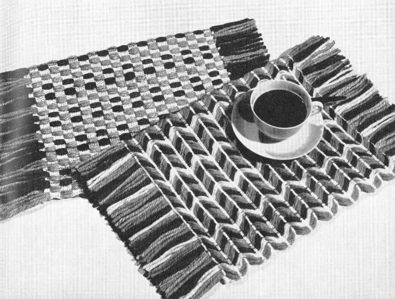
Cut strands of yarn about 25 inches long. Work in same manner as Woven Tote bag on page 23 but start weaving lengthwise of dish cloth at lower edge.
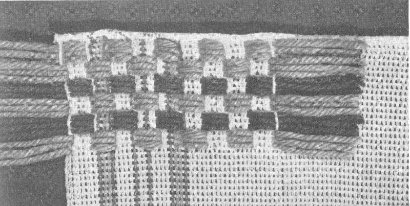
DETAIL FOR DISH CLOTH MAT #1
Cut strands of yarn about 28 inches long. Work in same manner as Ripple Tote bag on page 23 but start weaving lengthwise of dish cloth at lower edge and skip 3 meshes instead of 4 meshes throughout.
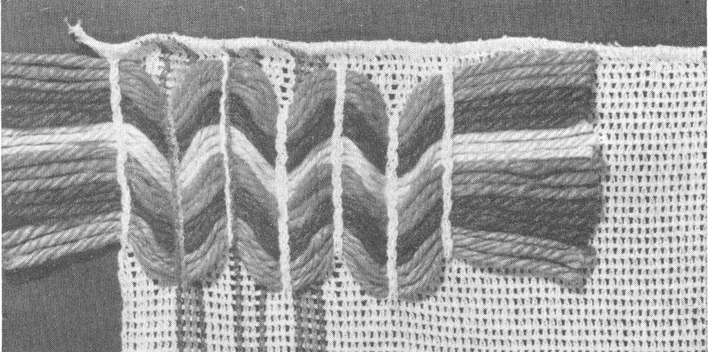
DETAIL FOR DISH CLOTH MAT #2
INSTEP: With Red ch 27 (each size) 1 s c in 2nd st from hook and in each remaining st of ch, ch 1 to turn all rows. 2nd ROW: 1 s c in each of the 1st 11 sts, dec in next 2 sts (to dec: keeping loops on hook pull up a loop in each of next 2 sts, y o and work off all loops at one time), place a marker, dec in next 2 sts, 1 s c in each remaining st. 3rd ROW: 1 s c in each st to within 2 sts of marker, dec in next 2 sts, dec in next 2 sts, 1 s c in each remaining st. Repeat last row until 4 sts remain. NEXT ROW: Dec in 1st 2 sts, dec in next 2 sts. NEXT ROW: Dec in 2 sts, cut yarn.
TOP SECTION: 1st HALF: Working on side of instep attach Red in 1st row, work 16 s c ending at point, ch 21, s c in 2nd st from hook and in each remaining st of ch, 1 s c in each s c. NEXT ROW: Work 1 s c in each s c, drop Red, attach White. NEXT 11 (13) ROWS: 1 s c in each s c alternating 2 rows White and 2 rows Red. NEXT ROW: Skip 1 s c, sl st in next s c, 1 s c in each remaining s c. NEXT ROW: 1 s c in each s c, sl st in sl st. NEXT ROW: Skip sl st, sl st in next st, 1 s c in each remaining s c, cut yarn. 2nd HALF: With Red starting at point work 16 s c on opposite side of instep. NEXT ROW: 1 s c in each s c and in each free loop of starting ch of 1st half (36 s c). Then work same as 1st half reversing shaping, cut yarn.
SOLE: With Red ch 2, 3 s c in 1st st of ch, ch 1 to turn all rows. 2nd ROW: Working in both loops of sts throughout 2 s c in 1st s c, s c in next s c, 2 s c in next s c. 3rd ROW: 1 s c in each s c. 4th ROW: Working in s c inc 1 st at beg and end of row. Repeat last 2 rows until there are 11 (13) sts. NEXT ROW: Work even. NEXT ROW: Dec 1 st at beg and end of row. Repeat last 2 rows until 3 sts remain. NEXT ROW: Dec in the 3 sts, cut yarn.
FINISHING: Fold the top section in half. Starting at top of boot sew back seam, across 11 (13) rows of lower edge matching stripes. Insert sole in opening and sl st instep and sole tog.
POMPONS: Make 2 Red and 2 White. Wind yarn 45 times over a 2½ inch cardboard. Slip off cardboard, tie in center, cut both ends. Trim into shape.
CORD. Make 2. With White work a ch 22 inches long. Lace through top of each boot and trim with pompons.
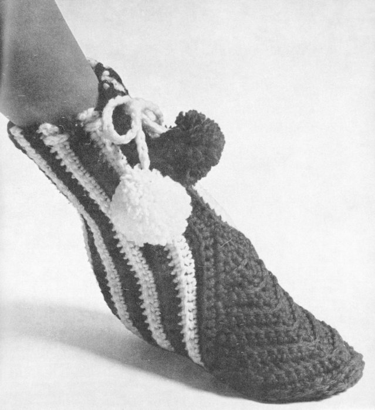
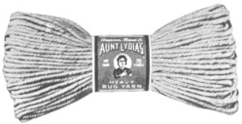
American Thread Co.
Aunt Lydia’s
FAST COLOR • 70 YARDS
HEAVY RUG YARN
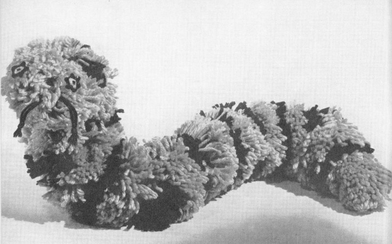
BODY: Open skein, cut 1 end. Take 4 lengths cut in half to be used for tying. Cut skein into 9 equal sections (approximately 5 inches). * Place four 5 inch sections on top of each other. Double 1 tying length in half and tie the 4 sections in center, turn and tie again leaving ends to tie next group. Open and cut Black in same manner leaving tying strands. Take 1½ sections and tie in center same as 1st section. With tying strands of each section, tie together. Repeat from * alternating colors until all sections are used, always tying new sections to already attached sections and ending with 2 groups of Chartreuse for Head Section. Trim head slightly to shape.
FACE: Tie 2 strands of Black in place knotting on each end. Form eyes with Black rickrack having 6 points on outside and drawing center points tog. Cut 2 points Gold, glue in place to center of each eye. Glue eyes in place.
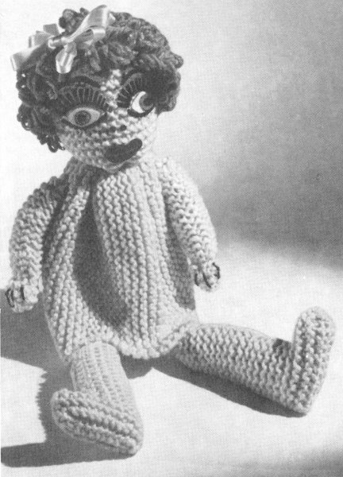
SKIRT: With Natural cast on 25 sts and work in garter st (K each row) for 17 inches. Bind off.
HEAD: Pick up and K 35 sts on one side of work for head picking up 1 st every other ridge. Work even in garter st for 5 inches. NEXT ROW: K across row dec 5 sts evenly spaced. NEXT ROW: K across row. Repeat last 2 rows once but do not work dec directly over previous dec. NEXT ROW: K 2 tog across row, cut yarn leaving a length. Sew back seam. Fill head with Kapok or Cotton. Thread yarn into a blunt needle and draw sts tog at top, fasten securely.
ARMS: With Natural cast on 10 sts and work in garter st for 5½ inches. Bind off. Draw sts tog at bottom, sew seam, fill with Kapok or Cotton. Draw sts tog at top and sew in position. Thread yarn into a blunt needle and draw sts tog slightly 1½ inches from bottom to form hands, fasten securely. Outline fingers with Black.
LEGS: With Natural cast on 25 sts, K 5 rows. NEXT 2 ROWS: Bind off 5 sts at beg of each row. Work even on remaining sts for 5½ inches, bind off. Fold work in half lengthwise, sew seam and fill with Kapok or Cotton, sew in position at bottom of skirt.
HAIR: Wind Bongo over a ruler, tack loops at top. Slip off ruler and sew to head. Continue in this manner until head is all covered. Glue in position as illustrated.
FACE: Cut eyelashes from Black felt same as Cat eyelashes on page 35. Cut mouth from Red felt about ⅛ inch larger than Doll mouth on page 34. Cut 2 White 1½ inch ovals for eyes. Cut two ½ inch circles of Navy felt and two ¼ inch circles Black felt for center of eyes. Cut 2 dots Red felt for nose. Glue in position as illustrated.
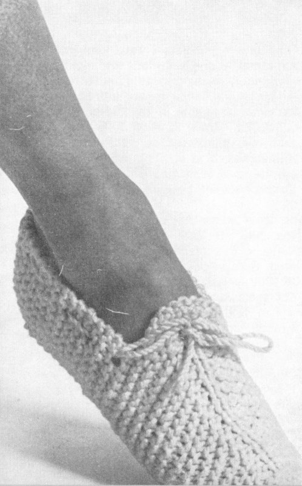
Directions are given for small to medium size. Changes for medium to large size are given in parentheses.
Cast on 3 sts. 1st ROW: K across row. 2nd ROW: K 1, P 1 (center st), K 1. 3rd ROW: Inc in 1st st, K 1 (center st), inc in last st. 4th ROW: K 2, P 1, K 2. 5th ROW: K across row inc 1 st before and after center st. 6th ROW: K 3, P 1, K 3. Repeat last 2 rows always inc 1 st before and after center st on 1st row, and always P center st on 2nd row until there are 33 (37) sts on needle. NEXT ROW: K across 10 (12) sts, bind off 13 sts at instep, K remaining sts. NEXT ROW: K across 6 (8) sts, K 2 tog, y o (beading), K remaining sts (work one side at a time, leave remaining sts on needle to be worked later). NEXT ROW: K across row counting y o as a st. NEXT 4 ROWS: K each row. Repeat last 6 rows 5 (6) times, bind off. Attach yarn at other side of instep, K 2, y o, K 2 tog, K 6 (8) sts across. Then complete side same as 1st side.
SOLE: Cast on 4 sts. Starting from heel work in garter st (K each row), inc 1 st at beg and end of every other row until there are 8 (10) sts on needle. NEXT 22 (28) ROWS: Work even. NEXT ROW: Inc 1 st at beg and end of row. NEXT 18 (22) ROWS: Work even. Then dec 1 st at beg and end of every other row until 4 sts remain on needle, bind off.
FINISHING: Weave heel section tog, insert sole in opening and sew in position.
CORD: Cut yarn 60 inches long, fold in half, twist tightly, let twist itself, knot at each end. Lace through beading.
This is the stitch used most often for embroidering a desired motif on a knitted article. It is worked by: * bringing needle through center of stitch from the wrong side to right side of work—see ill. A. Following the outline of the knit stitch above, draw the yarn across the back of the two strands of this stitch—see ill. A and B—return needle to the center of the same stitch—see ill. B—and draw yarn through. Repeat from * starting next stitch by bringing needle through center of stitch to be duplicated—see ill. C.
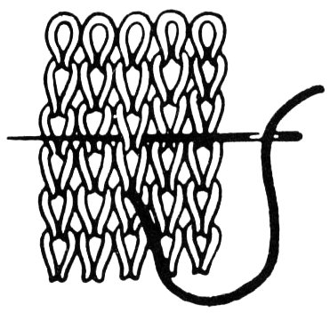
ILL. A
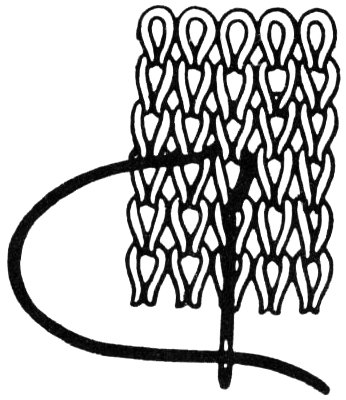
ILL. B
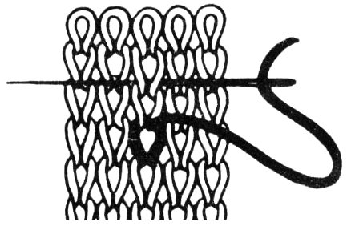
ILL. C
| KNITTING ABBREVIATIONS | |
|---|---|
| Knit | K |
| Purl | P |
| Stitch | St |
| Yarn Over | YO |
| Decrease | Dec. |
| Increase | Inc. |
| Together | Tog. |
| Round | Rnd. |
| Pass slip st over | P.s.s.o. |
| Horizontal Yarn | Yarn between sts |
| CROCHET ABBREVIATIONS | |
| Chain | Ch |
| Single Crochet | S c |
| Short Double Crochet | S d c |
| Double Crochet | D c |
| Treble Crochet | Tr c |
| Double Treble Crochet | D tr c |
| Treble Treble Crochet | Tr tr c |
| Slip Stitch | Sl st |
| Stitch | St |
| Stitches | Sts |
| Between | Bet |
*(Asterisk) This symbol indicates that the instructions immediately following are to be repeated the given number of times plus the original.
**Are used in the same way.
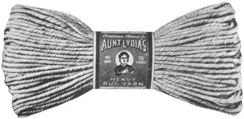
American Thread Co.
Aunt Lydia’s
FAST COLOR • 70 YARDS
HEAVY RUG YARN
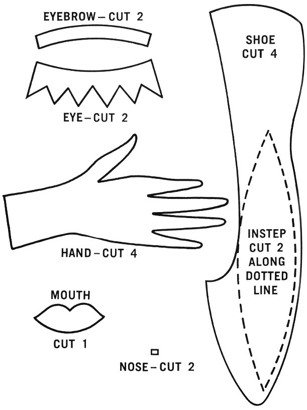
DIAGRAMS FOR MINI DOLL PAGE 18
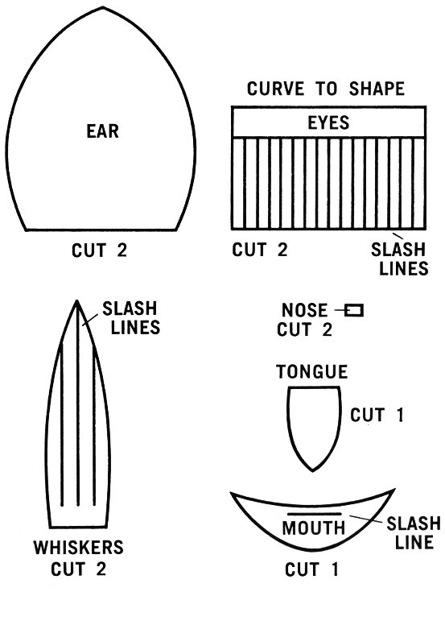
DIAGRAMS FOR DOLL TOASTER COVER PAGE 31
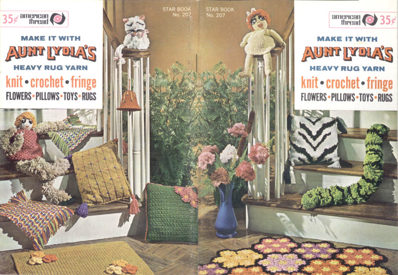